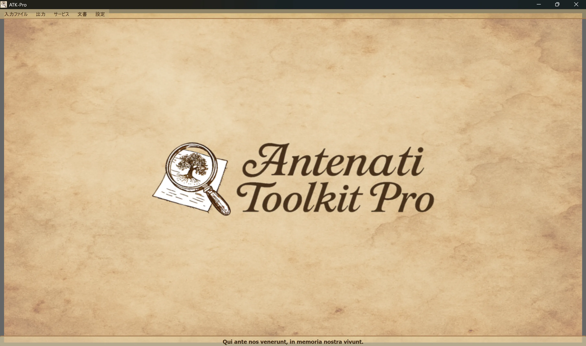

────────────────────────────────────────────────────────────────────────────────
Windowsの特長
ATK-Pro-Setup-vx.x.x.exe 公式リリースページよりLinuxの特長
ATK-Pro-vx.x.x.deb (Debian/Ubuntu) または .tar.gz リリースページからsudo dpkg -i ATK-Pro-vx.x.x.deb または Nautilus/Files のダブルクリック./ATK-Pro 抽出されたフォルダからmacOSの特長
ATK-Pro-vx.x.x.dmg リリースページからWindowsの特長
C:\Program Files\ATK-Pro\C:\Users\[TuoNome]\Documents\ATK-Pro\output\C:\Users\[TuoNome]\Documents\ATK-Pro\input\Linuxの特長
/opt/ATK-Pro/ (deb) または抽出されたフォルダー (.tar.gz)~/Documents/ATK-Pro/output/~/Documents/ATK-Pro/input/macOSの特長
/Applications/ATK-Pro.app~/Documents/ATK-Pro/output/~/Documents/ATK-Pro/input/────────────────────────────────────────────────────────────────────────────────
利用可能な言語は次のとおりです。
2025年の終わりに利用可能なデータによると、イタリアの子孫の約98%をカバーすることができると推定され、イタリアやイタリアのコミュニティは世界中で散らばる。
最初に実行すると、プログラムは次のフォルダーを自動的に作成します。
C:\Users\[TuoNome]\Documents\ATK-Pro\output\C:\Users\[TuoNome]\Documents\ATK-Pro\output\doc\ (デフォルト文書)C:\Users\[TuoNome]\Documents\ATK-Pro\output\reg\ (デフォルトレジスタ)~/Documents/ATK-Pro/output/input\ アナログ(任意、ファイル入力用)暫定フォルダの処理は、ダウンロードされたタイルのために作成されます()tiles_canvas_X/) そして、必要に応じて、PDF、その生成のための一時的なファイル。
処理終了時に、一時フォルダとファイルが自動的に削除されます。
最終的なファイルのみを処理する(選択した形式、PDF、マニフェスト、メタデータ)。
出力フォルダを変更するには、メニュー→設定→「出力フォルダの選択」を使用します。 選択肢は、次のセッションに自動的に保存され、復元されます。
コマンド 設定 → リソースプロファイル PDFのダウンロード、画像再構築および生成時に使用される並列性を調整します。
プロファイルは、取得された文書の品質、権利、数量を変更しません。 ポータルの特定のプルーデンシャル制限は、引き続き優先されます。
────────────────────────────────────────────────────────────────────────────────
Antenati Toolkit Proのメインウィンドウには、シンプルで直感的な構造があります。

ラティナモットー “Qui ante nos venerunt, 私たちのvivuntのメモリで”, 根と集団的な記憶の重要性を思い出させます.
ウィンドウの上部に、頭の下に:
[ファイル入力] [出力] [サービス] [ドキュメント] [設定]
各メニューには、特定のボタンとオプション(次のセクションを参照してください)が含まれています。
IIIFレコードの読み込みを管理します。
├─ Esempio input
│ └─ Visualizza il file di esempio (mostra formato coppie: modalità D/R + URL)
├─ Apri input
│ └─ Seleziona un file .txt con i tuoi record IIIF
│ (Deve contenere coppie: modalità D/R su riga 1, URL su riga 2)
└─ Modifica input
└─ Modifica il file input attualmente caricato
(Aggiungi/rimuovi record, cambia URL, salva modifiche)
処理および出力を管理して下さい:
├─ Elabora │ └─ Avvia il download, la ricostruzione e il salvataggio delle immagini │ (Mostra finestra di progresso in tempo reale) ├─ Apri cartella output │ └─ Apre in Esplora Risorse la cartella con i file elaborati └─ Visualizza elaborazioni precedenti └─ Lista dei record già elaborati
統合サービスの一覧:
├─ Ricerca assistita AI │ └─ Suggerisce portali, piste di ricerca e query genealogiche da verificare ├─ Visualizzazione Immagini │ └─ Viewer immagini scaricate e/o PDF generati ├─ Visualizzazione Metadati JSON │ └─ JSON originali e metadati (genealogici, tecnici, EXIF) ├─ OCR Avanzato │ └─ Testi manoscritti ottocenteschi, latino ecclesiastico, tardo-medievali ├─ Traduzione OCR │ └─ Traduzione automatica testi estratti nelle lingue selezionate └─ Esportazione GEDCOM └─ GEDCOM, Gramps, Family Tree Maker, Ancestry, MyHeritage, WikiTree, etc.
リソースとドキュメントへのアクセス:
├─ Disclaimer - Clausole legali e termini d'uso ├─ Presentazione autore - Background dell'autore del progetto ├─ Presentazione progetto - Storia, motivazioni, roadmap di ATK-Pro ├─ Guida - Indice principale della guida modulare └─ Informazioni - Versione, copyright, email di contatto
プログラムの一般的な構成:
├─ Cambia lingua
│ └─ Seleziona la lingua dell'interfaccia (richiede riavvio)
├─ Seleziona formati immagine
│ └─ Scegli tra PNG, JPG, TIFF e PDF (almeno 1 obbligatorio)
│ PDF può essere selezionato da solo o insieme ai formati immagine
│ La scelta viene memorizzata e pre-selezionata automaticamente alla sessione successiva
├─ Seleziona cartelle output
│ └─ Apre prima la scelta della modalità cartelle, poi le finestre di selezione:
│ • Cartella unica per tutti → una sola cartella per documenti e registri
│ • Cartelle separate doc/reg → una cartella per tutti i doc, una per tutti i reg
│ • Cartella per ogni record → una cartella distinta per ciascun record
│ La modalità e le cartelle vengono memorizzate e ripristinate alla sessione successiva
├─ Esporta configurazione
│ └─ Salva le impostazioni attuali in un file
├─ Importa configurazione
│ └─ Carica un file di impostazioni precedentemente salvato (ripristina tutte le preferenze e percorsi)
├─ Verifica aggiornamenti
│ └─ Controlla la disponibilità di nuove versioni del programma
└─ Chiudi
└─ Termina il programma (mostra banner di supporto PayPal.me)
────────────────────────────────────────────────────────────────────────────────
ATK-Proは20の言語で利用できます:
メニュー → 設定 → 変更言語でいつでも言語を変更できます。
プログラムは新しい言語を適用するために再起動が必要です。
再起動すると、選択した言語が自動的に読み込まれます。
言語変更は翻訳されます。
既定のモデルが廃止または利用不可になった場合、ATK-Pro は認証情報から参照できるカタログを照会し、機能に適合し、必要な場合は画像にも対応する汎用モデルを選択して、最大 3 つの代替モデルを試します。クォータ、ネットワーク、認証のエラーではフォールバックしません。
モデルの上書き：手動で入力したモデルは常に優先され、自動的に置き換えられることはありません。